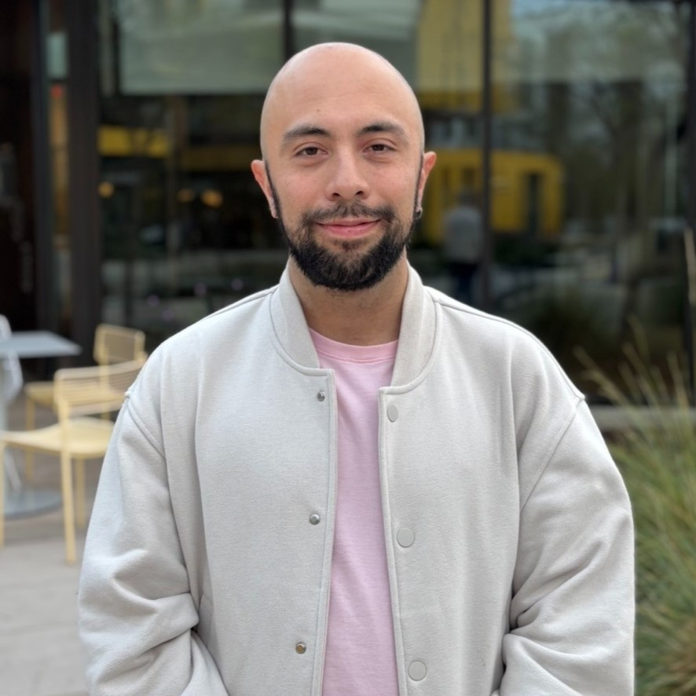
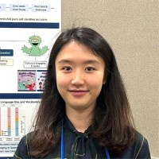
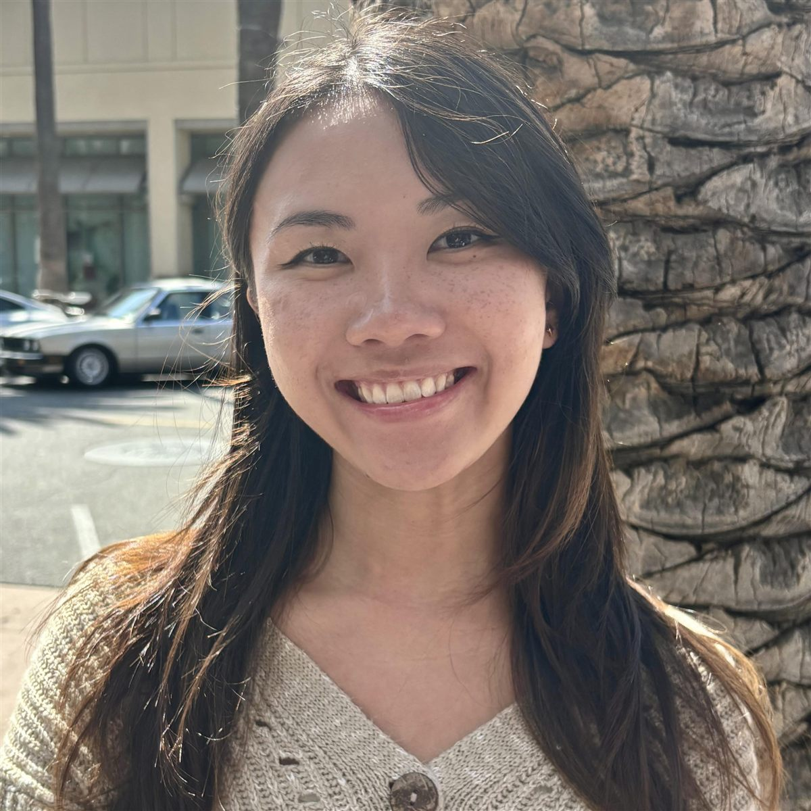
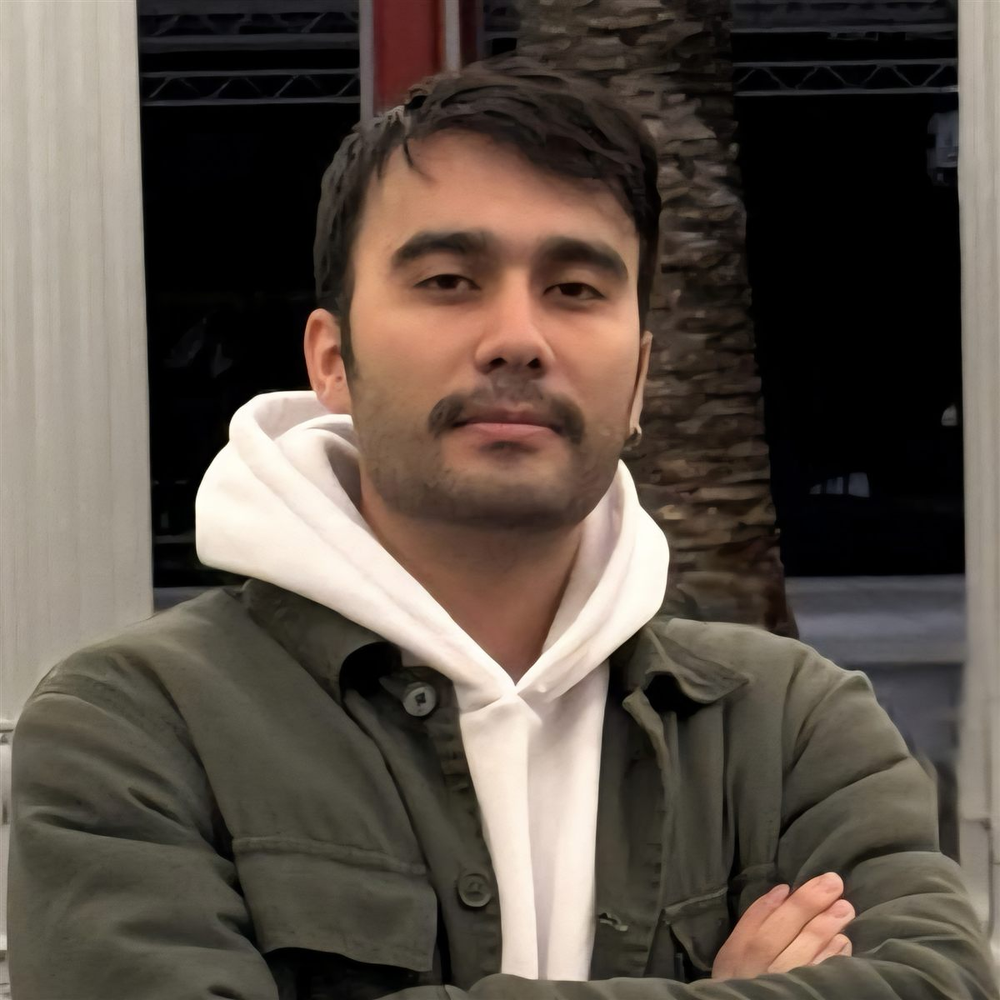
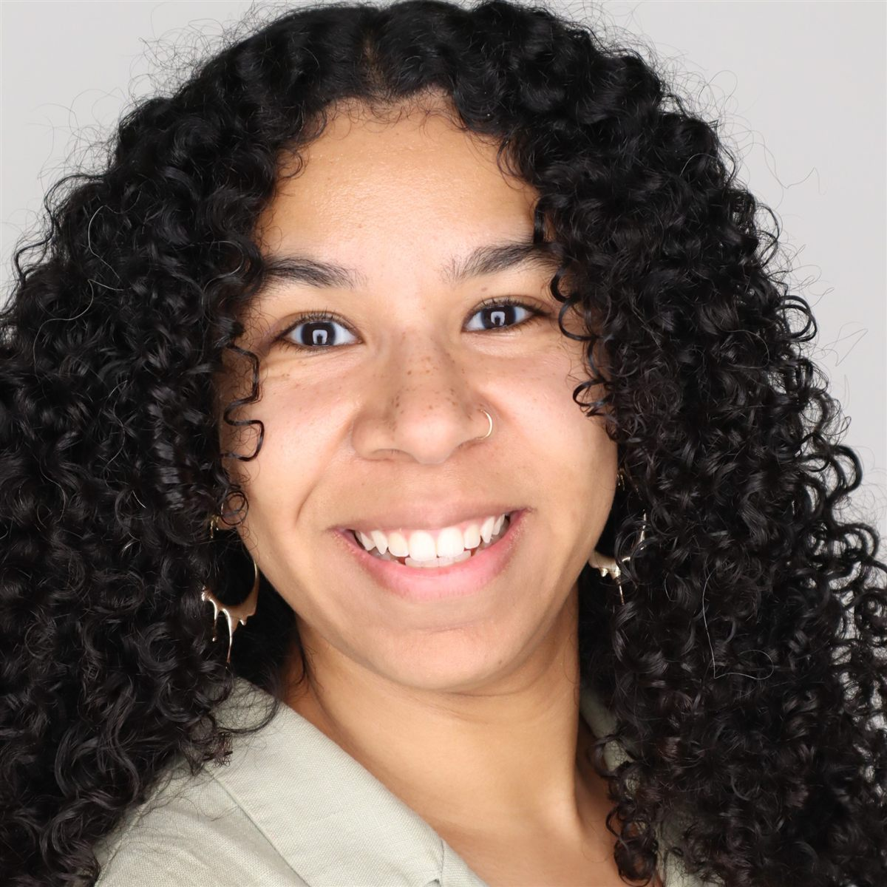
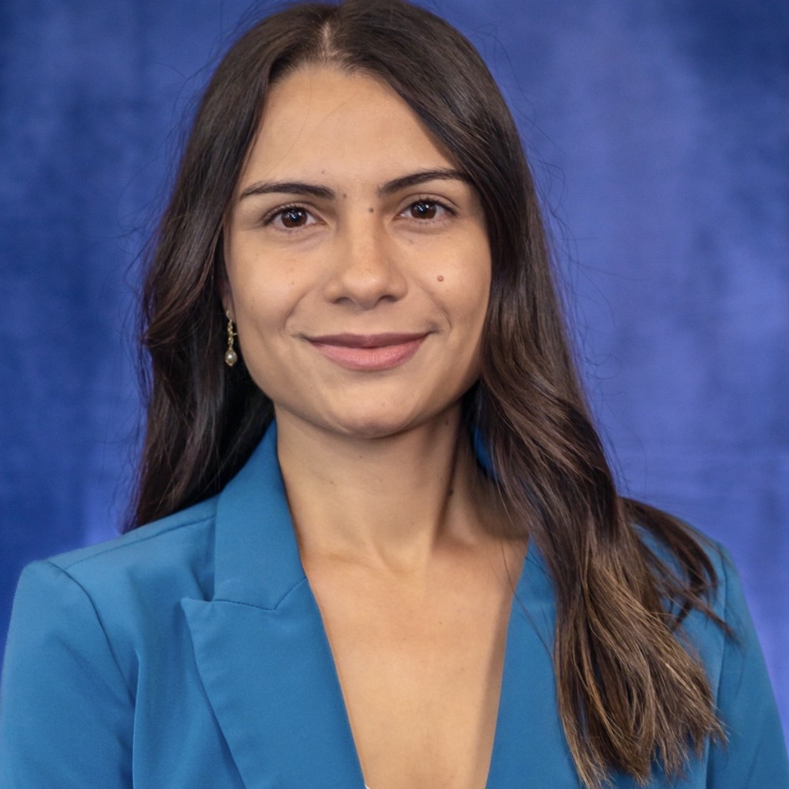

People
A community of curious minds.
The lab brings together researchers, educators, designers, students, collaborators, and alumni across education and computing.
Leadership
Guiding the work.
Lab leadership connects educational research, technology development, writing, and learning across the DLL portfolio.
Lab staff
Turning research into practice.
Curriculum, communications, project development, and writing expertise help the lab’s work reach classrooms and communities.
Graduate students
The next questions start here.
Doctoral researchers contribute new questions, methods, and perspectives across the lab’s interdisciplinary projects.
Waverly Tseng
PhD Candidate
View profile
Santiago Ojeda Ramirez
PhD Candidate
View profile
Kunlei He
PhD Candidate
View profileJulian Levine
PhD Candidate
View profile
Jasmine Tran
PhD Student
View profileAria Gastón-Panthaki
PhD Student
View profileJaeyoon Choi
PhD Student
View profile
Ali Keramati
PhD Student
View profileMaura White
PhD Student
View profile
Melissa Wright
PhD Student
View profileSiwon Sung
PhD Student
View profile
Viridiana Murillo Panduro
PhD Student
View profileResearch collaborators
Expertise across disciplines.
Collaborators extend the lab’s work across education, computer science, learning analytics, literacy, and related fields.
- Penelope Collins
- Shayan Doroudi
- Nia Dowell
- Diana Franklin
- Danny Glick
- Sharin Jacob
- Robert Kalinowski
- Jonathan Montoya
- Miranda Parker
- Debra Richardson
- Fernando Rodriguez
- Padhraic Smyth
- Di Xu
Alumni
Connected beyond the lab.
Former DLL researchers and students continue contributing to education, scholarship, and technology.
- Bianca Cung
- Clare Baek
- Daniel Ritchie
- Leiny Garcia
- Layne Hubbard
- Jenell Krishnan
- Hansol Lee
- Qiujie Li
- Chin-Hsi Lin
- Peter McPartlan
- Ha Nguyen
- Amanda Nili
- Yenda Prado
- Paul Rama
- Teomara Rutherford
- Trisha Thomas
- Dandan Yang
- Joanna Yao
- Soobin Yim
- Renzhe Yu
- Binbin Zheng
Work with us
Add your perspective.
There are pathways for current and prospective graduate students, undergraduates, visiting scholars, educators, and community partners.